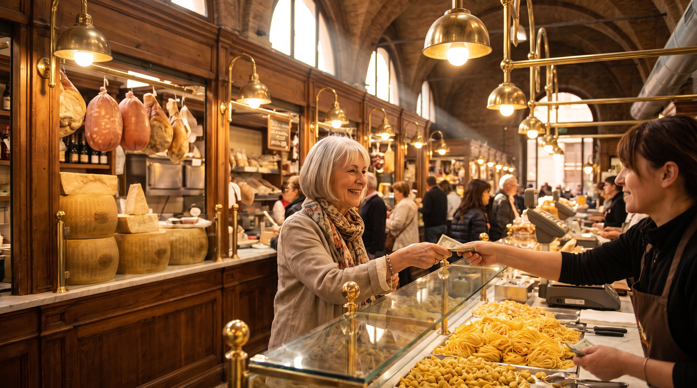

★★★★★
Giulia makes the language patient
I had tried three apps before I found Giulia. She teaches like an adult teaching another adult. I finally have Italian I can use.

Diane Whitfield
Portland, Oregon
Native teacher · CEFR Examiner · Faculty since 2022
Giulia is Bolognese on both sides for four generations. She read modern languages at the Università di Bologna and then trained specifically in food language, the specialised Italian of ingredients and preparation and market negotiation. She teaches from the corner of her kitchen. Copper pans hang on the wall behind her. That is the classroom.
Every teacher on our faculty teaches from one Italian region and from one only. That is not a marketing point. It is what allows a class to have a place. When Giulia opens a lesson at seven in the morning her time, the light behind her is Bologna light. The bread on her desk was bought at a Bologna bakery. The vocabulary that emerges in a conversation about weekends is Emilia-Romagna vocabulary. Students on the other side of the world tell us the same thing, class after class. They are not on a language platform. They are in Bologna, for eighty five minutes.
Regional Italian is not dialect. Giulia teaches the standard national language, the Italian of newspapers and universities and the state broadcaster. What she brings is location. A verb form is illustrated with a scene from her city. A grammar point is drawn out of a conversation that could have taken place on her street. The language stays standard. The teaching room is specific.

The intermediate stage is the honest stage. The tourist phrases are behind you, the certificate is far ahead, and in the middle is a real language that has to become yours. I teach that middle. I refuse to move a class faster than the slowest student's confidence. I use recipes and market conversation as the spine of most weeks, not because food is a gimmick, but because Italian food language is the most concrete adult vocabulary there is. A verb tense taught through the preparation of ragu is a verb tense a student never forgets. My kitchen is behind me on the camera. That is deliberate.
Every teacher on this faculty holds a formal Italian-as-a-foreign-language qualification from an Italian university. That is a non negotiable in our hiring. It is not the whole of the class, but it is the floor. What the students hear in the lesson is built on this training, and on years of teaching adults in exactly this format.
Ask us for the paper credentials. We share them.
I had tried three apps before I found Giulia. She teaches like an adult teaching another adult. I finally have Italian I can use.
Eighty five minutes in a class with Giulia feels like eighty five minutes in Bologna. That is the whole reason it worked for me.

I was afraid the novelty would wear off. It hasn't. Giulia keeps changing the shape of the class so it never gets stale.

Every teacher on the faculty holds a fixed teaching load. This is Giulia's.
Times are shown in New York time. All classes are live from Bologna.
One native teacher from Bologna, live from Emilia-Romagna, in a small group of adults who mean it.
Join a live class broadcasting from Italy.
Begin your journey →